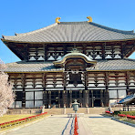
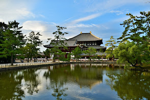
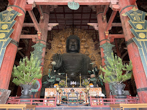
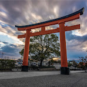
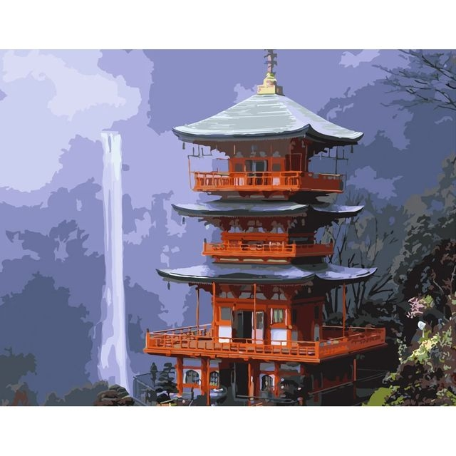
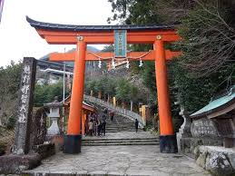
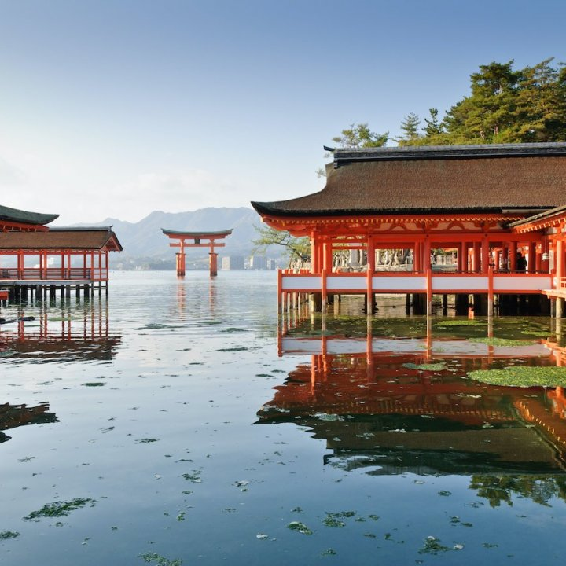
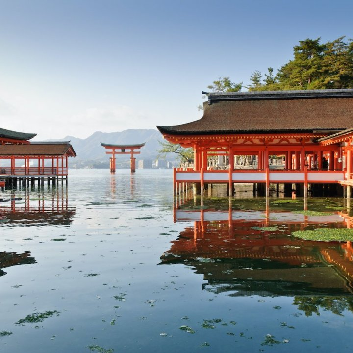
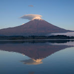
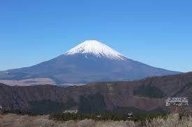

Видатні місця

Монастир Тодай
4.6⭐(24 тис.)
Буддистський храм
204,77 грн
Монастир Тодай


Буддійський храм з однією з найбільших бронзових статуй Будди в Японії, побудований у середині 700-х років.
 Більш детально читай тут
Більш детально читай тут

Fushimi Inari Taisha
4.6⭐(69 тис.)
Синтоїстський храм
Безкоштовно
Fushimi Inari Taisha


Название происходит от местности Фусими, названной в честь одноимённой горы и расположенной южнее средневекового Киото.
Більш детально читай тут
Itsukushima Shrine
4.6⭐(29 тис.)
Святилище Іцукусіма
76,79 грн
Itsukushima Shrine
 

Храм Ицукусима (厳島神社, Ицукусима-дзиндзя ) — синтоистский храм на острове Ицукусима (в народе известный как Миядзима), наиболее известный своими «плавающими» тории .
Більш детально читай тут

Mount Fuji
4.6⭐(11 тис.)
Вершина гори
Безкоштовно
Mount Fuji


Гора Фудзи (富士山, Фудзисан , японский: [ɸɯꜜ(d)ʑisaɴ] ⓘ )— действующийстратовулкан,расположенный наяпонскомостровеХонсю, с высотой вершины 3776,24 м (12 389 футов 3 дюйма).
Більш детально читай тут